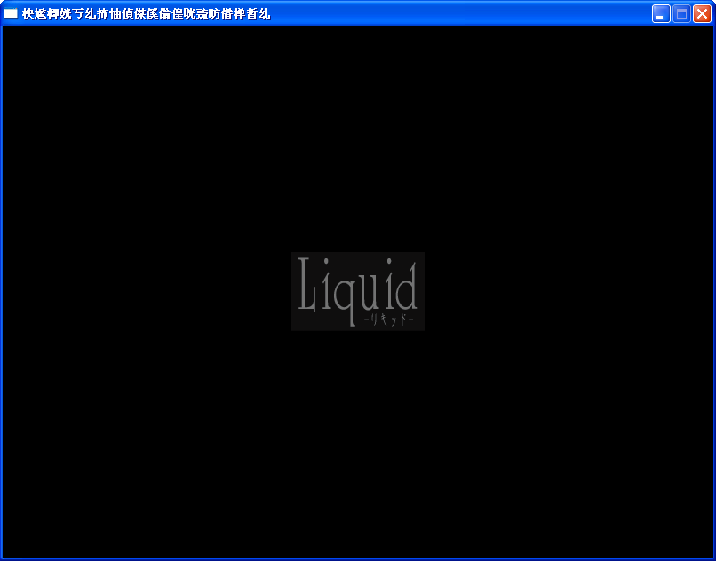
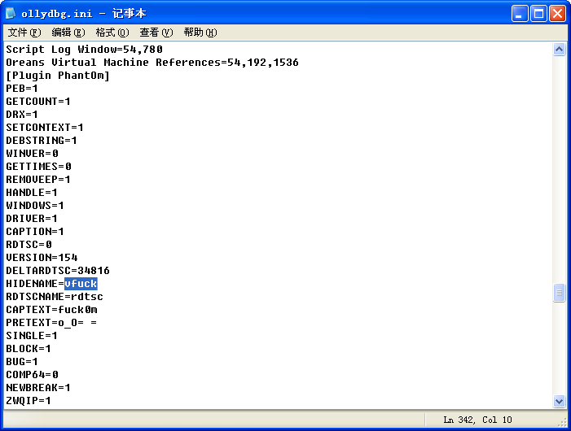
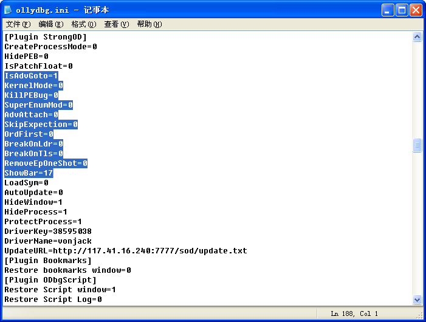
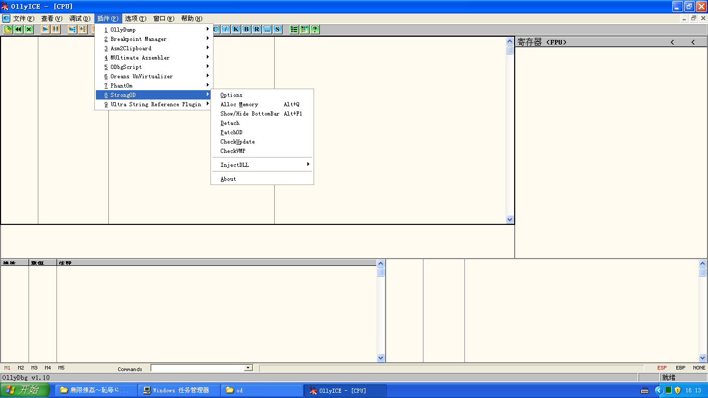
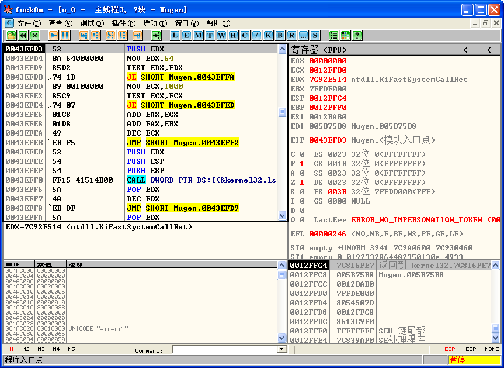

新手脚本脱Themida的一些尝试
作者 VonJack
Intro:
现在很多游戏都用的是AlphaRom的保护，而AlphaRom的保护已经被alsignup_signup和Azure大神的AlphaROMdiE艹得基本上失效了。然而AlphaRom的壳——西班牙的Themida还是有些技术难度的，汉化程序时如果不脱掉这层壳，直接写内存补丁的话，可能会异常地痛苦。本文主要介绍使用LCF-AT@tuts4you大神的Themida - Winlicense 1.x - 2.x Multi PRO Edition 1.2脱壳脚本达到快速脱部分Themida壳的目的。
Update 13/03/12：此脚本可脱壳"ウィッチズガーデン"。

Preparing:
M$ Windows XP系统；OllyDBG1.10原版或者相关修改版，比如OllyICE；OD相关插件（尽量少）：OllyDump，Strong OD，ODBGScript 1.82版以上，PhantOm 1.54（不要使用1.73版本，这个测试版本貌似无法加载驱动）。当然还有LCF-AT@tuts4you大神的Themida - Winlicense 1.x - 2.x Multi PRO Edition 1.2脱壳脚本。
Example:由于我的系统是Windows 7 x64，又不想装新系统，故使用了VirtualBox虚拟机来虚拟XP系统，虚拟机系统内请自行在安全模式下安装相关套件（包括DirectX支援），虚拟机安装过程就不累述了。有些加了Themida壳的程序会检测虚拟机，请自行结束VBoxServer.exe之类的程序，并主动进入注册表修改显卡名称。下面进入正题。

双击，进入虚拟机。

上图是虚拟机的一些配置，共享文件夹要注意设置好。


熟悉的XP启动界面╮(╯▽╰)╭进入系统~

被加壳的Mugen.exe，双击一下。
嗯，确定游戏在XP系统上可以成功运行。OK，开始脱壳。哦，先说说插件PhantOm和Strong OD插件的相关设置↓
PhantOm的HideName和Captext随便乱修下，不要和自带的相同就好。
Strong OD只使用Ctrl+G这类的高级功能。不要打开KernelMode，我这边虚拟机开KernelMode同时开PhantOm就调试不了程序╮(╯▽╰)╭
我的OD插件菜单，插件尽量少，没用的尽量删掉，以免和Themida发生冲突。
OK~OD准备就绪后，载入待调试程序，停在程序入口。

右键，运行LCF-AT的脚本。

看到脚本窗口了没？停住了。空格键继续运行脚本。

这里研究进程状况纯粹是浪费时间，否。

理由同上，否。

好了，脚本继续开始运行，我们选择“确定”。

是否查找VM？当然要找啦，“是”。

是否查找VM OEP？有些程序是要找的←上一步失败的情况下，这里我们不找了，“否”。

Patching eax？这里选是和选否关系都不是很大，尽量选否，防止壳出问题，这里我们选否。

注意了，这里提示我们之后要fix heap next time，我们点击“确定”。

是否使用jmp api的方式？一般情况下点“否”，点“是”关系也不大。

是否快速修复IAT？当然“是”啦~

跳过修复heap？前面有一步说的好像是heap有问题，点“否”，修复。

继续处理Anti-Dump，我们选“是”。

这里注意了，第一句提示我们之后可能要修VirtualProtect这个API。这里当然要修复了几个Anti-Dump的API了，点击“是”。

不需要ImpRec？真方便！当然“是”。

此时脚本停住了，进入脚本窗口，按空格键继续运行。

花时间的东西？只是“checking”？“否”。

理由同上，“否”。

感谢LCF-AT。
这样Themida的壳就被脱了，程序也停在了OEP。

开始dump。

点击Get EIP as OEP，Dump。得到mugen.dump.exe。
好，现在转移到Win7下，双击mugen.dump.exe。

什么？打不开？大概是系统dll的指令出错了，记得前面提示修复的VirtualProtect吗？

载入，发现是在上图的call处导致的出错，回到XP，发现7C801AD0这里应该是kernel32.VirtualProtect。找到原因了，开始修复IAT。

用LordPE打开mugen.dump.exe，添加输入表。

嗯，将VirtualProtect添加进去。

记住了ThunkRVA么~0x00A6A01E哟~

再回到OD，载入mugen.dump.exe，点击内存窗口，Ctrl+G，转移到RVA:0x00A6A01E。

看到左边的地址了么？VA:0x00E6A01E，在0x004B3850处汇编~

将修改好的程序保存到文件。双击mugen.dump.exe：

OVER~
After Example：
以上就是“無限煉姦～恥辱にまみれし不死姫の輪舞～”主程序的脱壳了。这个程序的脱壳比较容易←使用脚本。以下是脱其他游戏Themida壳的一些经验。
無限煉姦～恥辱にまみれし不死姫の輪舞～：有时候dump后的程序VirtualProtect没有出现问题，这时候就要警醒了，因为可能其他一些API坏了，我第一次脱这个游戏的时候坏掉的是kernel32.Sleep这个API而不是VirtualProtect，所以修IAT的时候尽量两个系统对比，好找出真实的API。
大図書館の羊飼い：这款比较好脱，最后修下VirtualProtect就好。脱完壳顺便把那个识别系统区域的call改成mov eax,1就能运行了←虽说还是乱码，推荐ntlea。
はつゆきさくら：同上，但最好切换成日区，可能会有个别call API出错，但是出错的数量相当少，一个一个修就好了。运气好的话连VirtualProtect都不用修呢~这个s啥的引擎的语系判断貌似也只有一个call，同上方法即可。
Dies irae -Acta est Fabula-：这一款比较讨厌，dump下来之后请使用Scylla，找到程序中的一堆jmp dword ptr [0x000000]这样形式的命令，导出tree.xml，如果发现kernel32和imm32的trunk重叠的话就手动修改xml分开。Scylla中打上黄色三角形的地方也请手动修复呢。修完iat发现程序还是不能运行，更具系统给出的错误：0x7XXXXXXX可以判断大概是系统api的问题，在.code段搜索这个常量，可以发现一堆jmp 0x7XXXXXXX，回到XP系统发现这个API是msvcrt.free，把这堆jmp改成jmp dword ptr [&msvcrt.free]即可。至此，程序可以正常运行。
いきなりあなたに恋している：如本文的步奏脱即可最后貌似连VirtualProtect都不要修，在某处打开key文件附近的jnz改成jmp即可免CD。
夏の終わりのニルヴァーナ：根据KF上Azure大对这个游戏壳的评价和相关留言，已经脱壳成功，之后放教程。至此硬盘上的Themida加壳的游戏都脱壳成功。
OVER~
Final Notes:
本人野生业余程序一枚，很多程序上的分析都是半吊子或者连半吊子都算不上，接手的坑也基本上用的是最没技术的动态替换法←捂脸T T写这篇文章的目的是为了钓出大神来给大家详细讲解Themida、Secrom、StarForce这些牛壳的脱壳法。CK上这些壳的介绍不多，看雪上也没能找到俺看得懂的指导性的文章。最近比较忙写得比较仓促，错误的地方请谅解，我会来抽空修正。瑾以此拙文，望CK的众巨巨抛砖引玉，写一写新手向的妙文。
greetz,
vonjack
[ 此帖被vonjack在2013-03-12 14:22重新编辑 ]